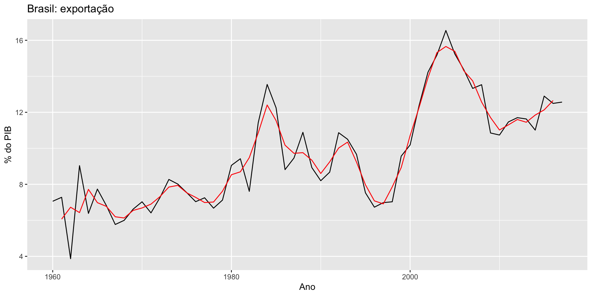
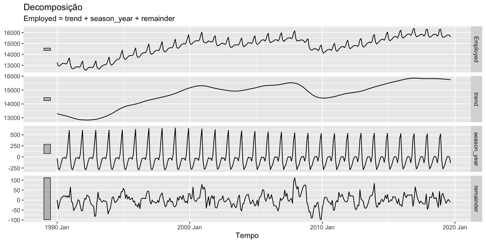

Code

ME607 - Séries Temporais
Instituto de Matemática, Estatística e Computação Científica (IMECC),
Universidade Estadual de Campinas (UNICAMP).
Médias MóveisComponentes de uma série temporal:
Tendência (\(T_t\)): Componente a longo prazo e indica um aumento/diminuição.
Sazonalidade (\(S_t\)): Oscilações que se produzem e repetem em curtos períodos de tempo (semanal, mensal, trimestral,…)
Aleatoriedade (\(R_t\)): A parte que não é explicada pelas componentes anteriores.
Ciclo (\(C_t\)): Alguns autores incluem esta componente mas aqui não será utilizada e esta estará embutida na tendência (tendência-ciclo).
Ajustes calendário
Quando trabalhamos com dados sazonais, primeiro removemos o efeito calendário. Ex: quando trabalhamos com dados mensais é importante levar em consideração o número de dias úteis (ou dias calendário) dentro de cada mês. Isto pode ser feito utilizando a média diária em lugar do total mensal.
Ajustes populacionais
Qualquer série temporal que esteja afetada população pode ser transformada em séries per capita (ou por milhões de habitantes).
Ajustes de inflação
Dados que são afetados pelo valor do dinheiro devem ser ajustados pela inflação antes de serem analisados.
Transformações matemáticas
Existem diversas e dependem do tipo de dado utilizado e da finalidade a ser alcançada.
Após o gráfico de sequência, talvez identifiquemos que a série pode ser escrita como:
\[\underbrace{y_t = T_t + S_t + R_t}_{Decomposição \quad aditiva} \quad ou \quad \underbrace{y_t = T_t \times S_t \times R_t}_{Decomposição \quad multiplicativa}\]
Se a magnitude das oscilações não varia com o nível, então utilizamos uma decomposição aditiva. Caso contrário, uma decomposição multiplicativa.
Se a magnitude das oscilações não varia com o nível, então utilizamos uma decomposição aditiva. Caso contrário, uma decomposição multiplicativa.
Obs: \[y_t = T_t \times S_t \times R_t \quad \rightarrow \quad \log(y_t) = \log(T_t) + \log(S_t) + \log(R_t)\]
Suponha que temos a seguinte série temporal
O objetivo é decompor a série na suas componentes.
Se a componente sazonal é removida da série, dizemos que a serié é sazonalmente ajustada. Esta série (sazonalmente ajustada) é dada, dependendo se utilizarmos uma decomposição aditiva ou multiplicativa, por: \[y_t - S_t \quad ou \quad y_t/S_t\]
Elementos
MA tem dois principais elementos:
Seja \(m = 2k+1\), a média movel (simples), dita de ordem \(m\) (ou \(m\)-MM), é dada por:
\[\hat{y}_t = \dfrac{1}{m}\displaystyle \sum_{i= - m + 1}^0 y_{t + i}.\]
\[\hat{y}_t = \dfrac{1}{m}\displaystyle \sum_{i=-k}^k y_{t+i}.\]
Considerando \(m = 5\), calcular as MM (uni e bidirecionais) da seguinte série temporal:
\[y_1, y_2, y_3, y_4, y_5, y_6, y_7, y_8, y_9, y_{10}, \cdots, y_{999}, y_{1000}\]
Para pensar
# A tsibble: 74 x 4 [1Q]
Quarter Beer `4-MM` `2x4-MM`
<qtr> <dbl> <dbl> <dbl>
1 1992 Q1 443 NA NA
2 1992 Q2 410 451. NA
3 1992 Q3 420 449. 450
4 1992 Q4 532 452. 450.
5 1993 Q1 433 449 450.
6 1993 Q2 421 444 446.
7 1993 Q3 410 448 446
8 1993 Q4 512 438 443
9 1994 Q1 449 441. 440.
10 1994 Q2 381 446 444.
# ℹ 64 more rowsPara melhor entende \(2 \times m - MM\), introduziremos um conceito ainda mais geral, que envolve ambos os casos descritos anteriormente, o de médias móveis ponderadas.
Médias Móveis Ponderadas
\[\hat{y}_t = \displaystyle \sum_{j = -k}^k a_k y_{t+j},\] em que \(\displaystyle \sum_{j = -k}^k a_k = 1\) e \(a_j = a_{-j}\).
\[y_t = T_t + S_t + R_t\]
\[y_t = T_t \times S_t \times R_t\]
Rows: 144
Columns: 2
$ Month <chr> "1949-01", "1949-02", "1949-03", "1949-04", "1949-05", "194…
$ Passengers <int> 112, 118, 132, 129, 121, 135, 148, 148, 136, 119, 104, 118,…Rows: 144
Columns: 2
$ Month <mth> 1949 Jan, 1949 Feb, 1949 Mar, 1949 Apr, 1949 May, 1949 Jun,…
$ Passengers <int> 112, 118, 132, 129, 121, 135, 148, 148, 136, 119, 104, 118,…# A dable: 144 x 7 [1M]
# Key: .model [1]
# : Passengers = trend * seasonal * random
.model Month Passengers trend seasonal random season_adjust
<chr> <mth> <int> <dbl> <dbl> <dbl> <dbl>
1 decomposition 1949 Jan 112 NA 0.910 NA 123.
2 decomposition 1949 Feb 118 NA 0.884 NA 134.
3 decomposition 1949 Mar 132 NA 1.01 NA 131.
4 decomposition 1949 Apr 129 NA 0.976 NA 132.
5 decomposition 1949 May 121 NA 0.981 NA 123.
6 decomposition 1949 Jun 135 NA 1.11 NA 121.
7 decomposition 1949 Jul 148 127. 1.23 0.952 121.
8 decomposition 1949 Aug 148 127. 1.22 0.953 121.
9 decomposition 1949 Sep 136 128. 1.06 1.00 128.
10 decomposition 1949 Oct 119 129. 0.922 1.00 129.
# ℹ 134 more rowsyearmonth() do pacote tsibble, outras funções úteis são yearquarter(), yearweek(), as_date(), ymd(), ymd_hms().type dentro de classical_decomposition() pode ser “multiplicative” ou “aditive”, dependendo do tipo de decomposição a ser utilizada.library(stringi)
library(stringr)
url <- "https://raw.githubusercontent.com/jbrownlee/Datasets/master/airline-passengers.csv"
passageiros_hand <- read.csv(url)
passageiros_hand <- passageiros_hand |>
mutate(Tt = media_movel_par(Passengers, 12)) |>
mutate(At = Passengers/Tt) # Removemos a tendência
cbind(passageiros_hand$Tt, dcmp$trend) [,1] [,2]
[1,] NA NA
[2,] NA NA
[3,] NA NA
[4,] NA NA
[5,] NA NA
[6,] NA NA
[7,] 126.7917 126.7917
[8,] 127.2500 127.2500
[9,] 127.9583 127.9583
[10,] 128.5833 128.5833
[11,] 129.0000 129.0000
[12,] 129.7500 129.7500
[13,] 131.2500 131.2500
[14,] 133.0833 133.0833
[15,] 134.9167 134.9167
[16,] 136.4167 136.4167
[17,] 137.4167 137.4167
[18,] 138.7500 138.7500
[19,] 140.9167 140.9167
[20,] 143.1667 143.1667
[21,] 145.7083 145.7083
[22,] 148.4167 148.4167
[23,] 151.5417 151.5417
[24,] 154.7083 154.7083
[25,] 157.1250 157.1250
[26,] 159.5417 159.5417
[27,] 161.8333 161.8333
[28,] 164.1250 164.1250
[29,] 166.6667 166.6667
[30,] 169.0833 169.0833
[31,] 171.2500 171.2500
[32,] 173.5833 173.5833
[33,] 175.4583 175.4583
[34,] 176.8333 176.8333
[35,] 178.0417 178.0417
[36,] 180.1667 180.1667
[37,] 183.1250 183.1250
[38,] 186.2083 186.2083
[39,] 189.0417 189.0417
[40,] 191.2917 191.2917
[41,] 193.5833 193.5833
[42,] 195.8333 195.8333
[43,] 198.0417 198.0417
[44,] 199.7500 199.7500
[45,] 202.2083 202.2083
[46,] 206.2500 206.2500
[47,] 210.4167 210.4167
[48,] 213.3750 213.3750
[49,] 215.8333 215.8333
[50,] 218.5000 218.5000
[51,] 220.9167 220.9167
[52,] 222.9167 222.9167
[53,] 224.0833 224.0833
[54,] 224.7083 224.7083
[55,] 225.3333 225.3333
[56,] 225.3333 225.3333
[57,] 224.9583 224.9583
[58,] 224.5833 224.5833
[59,] 224.4583 224.4583
[60,] 225.5417 225.5417
[61,] 228.0000 228.0000
[62,] 230.4583 230.4583
[63,] 232.2500 232.2500
[64,] 233.9167 233.9167
[65,] 235.6250 235.6250
[66,] 237.7500 237.7500
[67,] 240.5000 240.5000
[68,] 243.9583 243.9583
[69,] 247.1667 247.1667
[70,] 250.2500 250.2500
[71,] 253.5000 253.5000
[72,] 257.1250 257.1250
[73,] 261.8333 261.8333
[74,] 266.6667 266.6667
[75,] 271.1250 271.1250
[76,] 275.2083 275.2083
[77,] 278.5000 278.5000
[78,] 281.9583 281.9583
[79,] 285.7500 285.7500
[80,] 289.3333 289.3333
[81,] 293.2500 293.2500
[82,] 297.1667 297.1667
[83,] 301.0000 301.0000
[84,] 305.4583 305.4583
[85,] 309.9583 309.9583
[86,] 314.4167 314.4167
[87,] 318.6250 318.6250
[88,] 321.7500 321.7500
[89,] 324.5000 324.5000
[90,] 327.0833 327.0833
[91,] 329.5417 329.5417
[92,] 331.8333 331.8333
[93,] 334.4583 334.4583
[94,] 337.5417 337.5417
[95,] 340.5417 340.5417
[96,] 344.0833 344.0833
[97,] 348.2500 348.2500
[98,] 353.0000 353.0000
[99,] 357.6250 357.6250
[100,] 361.3750 361.3750
[101,] 364.5000 364.5000
[102,] 367.1667 367.1667
[103,] 369.4583 369.4583
[104,] 371.2083 371.2083
[105,] 372.1667 372.1667
[106,] 372.4167 372.4167
[107,] 372.7500 372.7500
[108,] 373.6250 373.6250
[109,] 375.2500 375.2500
[110,] 377.9167 377.9167
[111,] 379.5000 379.5000
[112,] 380.0000 380.0000
[113,] 380.7083 380.7083
[114,] 380.9583 380.9583
[115,] 381.8333 381.8333
[116,] 383.6667 383.6667
[117,] 386.5000 386.5000
[118,] 390.3333 390.3333
[119,] 394.7083 394.7083
[120,] 398.6250 398.6250
[121,] 402.5417 402.5417
[122,] 407.1667 407.1667
[123,] 411.8750 411.8750
[124,] 416.3333 416.3333
[125,] 420.5000 420.5000
[126,] 425.5000 425.5000
[127,] 430.7083 430.7083
[128,] 435.1250 435.1250
[129,] 437.7083 437.7083
[130,] 440.9583 440.9583
[131,] 445.8333 445.8333
[132,] 450.6250 450.6250
[133,] 456.3333 456.3333
[134,] 461.3750 461.3750
[135,] 465.2083 465.2083
[136,] 469.3333 469.3333
[137,] 472.7500 472.7500
[138,] 475.0417 475.0417
[139,] NA NA
[140,] NA NA
[141,] NA NA
[142,] NA NA
[143,] NA NA
[144,] NA NA [,1] [,2]
[1,] 0.9086244 0.9102304
[2,] 0.8820663 0.8836253
[3,] 1.0055889 1.0073663
[4,] 0.9741842 0.9759060
[5,] 0.9796465 0.9813780
[6,] 1.1108125 1.1127758
[7,] 1.2243915 1.2265555
[8,] 1.2177586 1.2199110
[9,] 1.0586209 1.0604919
[10,] 0.9201309 0.9217572
[11,] 0.7997645 0.8011781
[12,] 0.8972386 0.8988244[1] 0.9982357 [1] 0.9102304 0.8836253 1.0073663 0.9759060 0.9813780 1.1127758 1.2265555
[8] 1.2199110 1.0604919 0.9217572 0.8011781 0.8988244 [1] 0.9102304 0.8836253 1.0073663 0.9759060 0.9813780 1.1127758 1.2265555
[8] 1.2199110 1.0604919 0.9217572 0.8011781 0.8988244O método clássico de decomposição possui algumas limitações que fazem dele um método pouco recomendado nos dias de hoje:
Outros métodos de decomposição como X-11, SEATS (Seasonal Extraction in ARIMA Time Series), STL (Seasonal and Trend decomposition using Loess) e Prophet resolvem alguns dos pontos mencionados anteriormente.
SEATS (Seasonal Extraction in ARIMA Time Series).
STL (Seasonal and Trend decomposition using Loess) 1
Métodos de decomposição são geralmente utilizados para entender a dinâmica da série mas também podem ser utilizados para fazer previsão.
Dependendo se o modelo for aditivo ou multiplicativo, podemos escrever a série temporal como.
\[y_t = \hat{S}_t + \underbrace{\hat{T}_t + \hat{R_t}}_{\hat{A}_t}\quad \text{ou} \quad y_t = \hat{S}_t \times \underbrace{\hat{T}_t \times \hat{R_t}}_{\hat{A}_t},\] em que \(\hat{A}_t\) é a série ajustada pela sazonalidade.
Para fazer previsão da série original, fazemos previsão da componente sazonal \(\hat{S}_t\) e da série ajustada pela sazonalidade \(\hat{A}_t\) de forma independente e depois combinamos ambas previsões para obter a previsão da série original.

Carlos Trucíos (IMECC/UNICAMP) | ME607 - Séries Temporais | ctruciosm.github.io